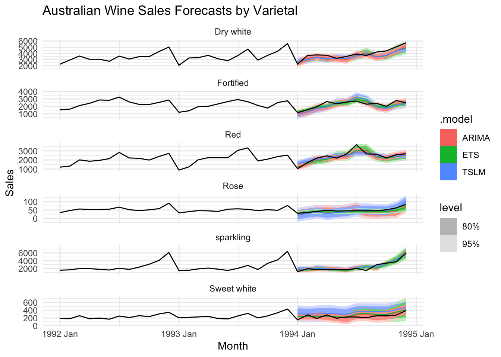

# A tsibble: 1,080 x 3 [1M]
# Key: Varietal [6]
Month Varietal Sales
<mth> <chr> <dbl>
1 1980 Jan Dry white 1954
2 1980 Feb Dry white 2302
3 1980 Mar Dry white 3054
4 1980 Apr Dry white 2414
5 1980 May Dry white 2226
6 1980 Jun Dry white 2725
7 1980 Jul Dry white 2589
8 1980 Aug Dry white 3470
9 1980 Sep Dry white 2400
10 1980 Oct Dry white 3180
# ℹ 1,070 more rows
Data visualization
Visualize the time series data for each varietal with a vertical line indicating the split between training and test sets (January 1994).
# training and test setstrain <- aus_wine_ts |>filter_index("1980 Jan"~"1993 Dec")test <- aus_wine_ts |>filter_index("1994 Jan"~"1994 Dec")
Tab2 - Modeling Building
Imputs: * Toggle for model type: TSLM, ETS, ARIMA * Toggle training accuracy * Toggle forecasting accuracy * Forecast visualization ### Model fitting
Built multiple models for each varietal using TSLM, auto ETS and auto ARIMA.
fit <- train |>model(TSLM(Sales ~trend() +season()),ETS =ETS(Sales),ARIMA =ARIMA(Sales))fit |> knitr::kable(caption ="Model specifications by Varietal")
Model specifications by Varietal
Varietal
TSLM(Sales ~ trend() + season())
ETS
ARIMA
Dry white
<ETS(M,N,M)>
<ARIMA(0,0,0)(0,1,1)[12] w/ drift>
Fortified
<ETS(M,A,M)>
<ARIMA(0,0,0)(2,1,1)[12] w/ drift>
Red
<ETS(M,A,M)>
<ARIMA(1,0,1)(0,1,1)[12] w/ drift>
Rose
<ETS(M,A,M)>
<ARIMA(3,0,0)(2,1,0)[12] w/ drift>
Sweet white
<ETS(M,A,M)>
<ARIMA(2,0,0)(0,1,1)[12]>
sparkling
<ETS(M,N,M)>
<ARIMA(0,0,1)(0,1,2)[12] w/ drift>
The fitted models successfully report the required specifications: each varietal includes an ETS component form (e.g., ETS(M,A,M)) and a clearly identified ARIMA structure with full seasonal orders (e.g., ARIMA(0,0,0)(0,1,1)[12] w/ drift), which meets the MVP requirement for model specification.
Training accuracy
fit |>accuracy() |>select(Varietal, .model, RMSE, MAE, MAPE) |>arrange(RMSE) |> knitr::kable(digits =1, caption ="Training accuracy sorted by RMSE")
Training accuracy sorted by RMSE
Varietal
.model
RMSE
MAE
MAPE
Rose
ETS
17.1
12.0
12.3
Rose
TSLM(Sales ~ trend() + season())
18.5
13.1
14.0
Rose
ARIMA
19.4
13.1
14.0
Sweet white
ETS
44.6
31.3
13.0
Sweet white
ARIMA
50.6
35.6
13.9
Sweet white
TSLM(Sales ~ trend() + season())
100.9
81.0
35.5
Red
ETS
177.7
132.5
8.3
Red
ARIMA
194.5
139.5
8.9
Red
TSLM(Sales ~ trend() + season())
197.7
152.6
10.9
Fortified
ARIMA
283.0
209.5
6.8
Fortified
ETS
285.2
222.3
7.1
Fortified
TSLM(Sales ~ trend() + season())
286.2
222.4
7.2
Dry white
TSLM(Sales ~ trend() + season())
315.5
243.1
7.7
Dry white
ETS
318.4
243.4
7.6
Dry white
ARIMA
326.1
230.2
7.3
sparkling
ETS
349.9
254.9
11.0
sparkling
ARIMA
355.1
247.0
11.1
sparkling
TSLM(Sales ~ trend() + season())
367.7
267.9
11.4
Forecasting accuracy
fc <- fit |>forecast(test)fc |>accuracy(test) |>select(Varietal, .model, RMSE, MAE, MAPE) |>arrange(RMSE) |> knitr::kable(digits =1, caption ="Validation accuracy sorted by RMSE")
Validation accuracy sorted by RMSE
Varietal
.model
RMSE
MAE
MAPE
Rose
ETS
8.4
6.1
11.1
Rose
TSLM(Sales ~ trend() + season())
9.2
7.6
16.4
Rose
ARIMA
9.2
8.1
16.8
Sweet white
ARIMA
51.3
45.5
21.1
Sweet white
ETS
61.1
53.3
24.7
Sweet white
TSLM(Sales ~ trend() + season())
112.8
104.2
47.7
Red
ARIMA
257.9
202.5
8.6
Red
ETS
297.2
255.4
10.4
Fortified
ETS
318.9
242.7
10.2
Red
TSLM(Sales ~ trend() + season())
319.3
249.0
11.8
Fortified
ARIMA
328.5
266.5
11.6
Fortified
TSLM(Sales ~ trend() + season())
426.5
362.7
16.3
sparkling
ETS
444.5
338.6
17.6
sparkling
TSLM(Sales ~ trend() + season())
459.1
353.4
19.1
sparkling
ARIMA
461.5
363.6
18.2
Dry white
ARIMA
484.4
420.1
10.3
Dry white
TSLM(Sales ~ trend() + season())
556.3
497.7
12.4
Dry white
ETS
562.7
510.8
12.7
Tab3 - Forecast
Inputs: * User can select model type for forecast visualization and forecast table (TSLM, ETS, ARIMA)
Forecast visualization
fc |>autoplot(train |>filter(Month >=yearmonth("1993 Jan"))) +facet_wrap(~ Varietal, scales ="free_y", ncol=1) +labs(title ="Australian Wine Sales Forecasts by Varietal",y ="Sales", x ="Month") +theme_minimal()

Forecast table
fc |>filter(.model =='ARIMA', year(Month) ==1994) |>as_tibble() |>select(Varietal, .model, Month, .mean) |>pivot_wider(names_from = Month, values_from = .mean) |> knitr::kable(digits =0, caption ="Forecasted Sales for 1994 by Varietal using ARIMA Model")
Forecasted Sales for 1994 by Varietal using ARIMA Model
Varietal
.model
1994 Jan
1994 Feb
1994 Mar
1994 Apr
1994 May
1994 Jun
1994 Jul
1994 Aug
1994 Sep
1994 Oct
1994 Nov
1994 Dec
Dry white
ARIMA
2371
3185
3418
3259
3172
3005
3733
3888
3389
3702
4389
5247
Fortified
ARIMA
1065
1304
1806
1966
2382
2544
3023
2612
1983
1745
2307
2560
Red
ARIMA
1262
1594
2104
2154
2307
2405
3056
2909
2309
2205
2486
2673
Rose
ARIMA
23
32
38
38
36
43
56
40
38
40
44
75
Sweet white
ARIMA
231
242
255
243
221
195
281
289
254
276
339
425
sparkling
ARIMA
1703
1679
1967
1984
1795
1578
2122
2443
2108
3355
4247
6379
Report generation
As an additional user-experience feature, I present the training and validation accuracy using formatted gt tables and focus the forecast visualization on the most recent history (from 1993 onward), which makes it easier to compare model performance and interpret the forecast region.